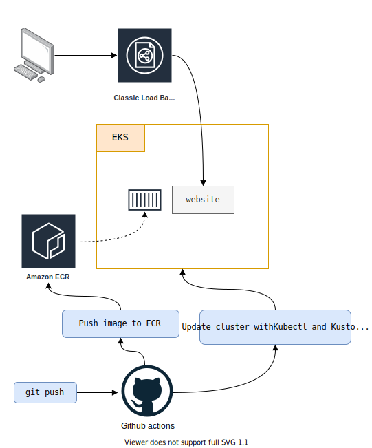

Kubernetes + EKS + Github Actions
- Create a website with node
- The site uses unit tests to validate its proper functioning
- Create an ECR registry
- Create a Kubernetes cluster on EKS with eksctl
- Put the application online with Github Actions, kubetctl and kustomize
- Each git push should automatically update the Kubernetes cluster if the tests pass

Install, setup and explore the project
Get the code from this github repository :
# download the code
$ git clone \
--depth 1 \
https://github.com/jeromedecoster/aws-kubernetes-github-actions.git \
/tmp/aws
# cd
$ cd /tmp/aws
To setup the project, run the following command :
# install eksctl + kubectl + yq, create aws user + ecr repository
$ make setup
This command will :
- Install eksctl if it is not already installed.
- Install kubectl if it is not already installed.
- Install yq if it is not already installed.
- Creates an AWS Power User for the project.
- Creates an ECR repository.
- Creates an .env file from the .env.tmpl file.
The user is created :
The ECR repository is created :
Let’s test the site :
# local development (by calling npm script directly)
$ make dev
By opening the address http://localhost:3000 you can see the site :
We can stop the website with Ctrl + C.
The website have some tests :
const request = require('supertest')
const expect = require('chai').expect
const app = require('../app')
describe('app.test', function () {
it('GET / should return the homepage', function (done) {
request(app)
.get('/')
.end(function (err, res) {
if (err) return done(err)
expect(res.status).to.eq(200)
expect(res.header['content-type']).to.include('text/html')
expect(res.text).to.include('<h1>Hedgehog</h1>')
done()
})
})
it('GET /healthcheck should return a JSON', function (done) {
request(app)
.get('/healthcheck')
.end(function (err, res) {
if (err) return done(err)
expect(res.status).to.eq(200)
expect(res.header['content-type']).to.include('application/json')
expect(JSON.parse(res.text).uptime).to.gt(0)
done()
})
})
})
We run the tests with this command :
# run tests (by calling npm script directly)
$ make test
app.test
✓ GET / should return the homepage
✓ GET /healthcheck should return a JSON
2 passing (44ms)
This command does this :
$ npx mocha 'test/*.test.js'
Creating the cluster and setting up the configuration file
We launch the creation of the EKS cluster. You have to be patient because it takes about 15 minutes !
$ make cluster-create
The cluster is created :
Once the deployment is complete, we check that kubectl points to the right cluster :
$ kubectl config current-context
user@kubernetes-github-actions.eu-west-3.eksctl.io
To be able to use kubectl from github actions, you will need to install kubectl but also configure it so that it can interact with our cluster.
The configuration of kubectl is done by a YAML file.
On our local machine, the configuration file is located here :
$ cat $HOME/.kube/config
apiVersion: v1
clusters:
- cluster:
certificate-authority-data: LS0tLS1CR....UdJTi=
server: https://ABC...DEF.yl4.eu-west-3.eks.amazonaws.com
name: kubernetes-github-actions.eu-west-3.eksctl.io
# ...
It is possible to display this config using the following command :
$ kubectl config view
apiVersion: v1
clusters:
- cluster:
certificate-authority-data: DATA+OMITTED
server: https://ABC...DEF.yl4.eu-west-3.eks.amazonaws.com
name: kubernetes-github-actions.eu-west-3.eksctl.io
# ...
Note that passing through this command, the certificate is hidden : DATA+OMITTED.
Also note that this configuration file can contain the accesses of multiple clusters.
To display the data of a single cluster, we use the option --minify :
$ CONTEXT=$(kubectl config current-context)
$ kubectl config view --context=$CONTEXT --minify
apiVersion: v1
clusters:
- cluster:
certificate-authority-data: DATA+OMITTED
server: https://ABC...DEF.yl4.eu-west-3.eks.amazonaws.com
name: kubernetes-github-actions.eu-west-3.eksctl.io
contexts:
- context:
cluster: kubernetes-github-actions.eu-west-3.eksctl.io
user: user@kubernetes-github-actions.eu-west-3.eksctl.io
name: user@kubernetes-github-actions.eu-west-3.eksctl.io
current-context: user@kubernetes-github-actions.eu-west-3.eksctl.io
kind: Config
preferences: {}
users:
- name: user@kubernetes-github-actions.eu-west-3.eksctl.io
user:
exec:
apiVersion: client.authentication.k8s.io/v1alpha1
args:
- eks
- get-token
- --cluster-name
- kubernetes-github-actions
- --region
- eu-west-3
command: aws
env:
- name: AWS_STS_REGIONAL_ENDPOINTS
value: regional
- name: AWS_PROFILE
value: default
It is important to note that the connection is made using an aws cli command :
$ aws eks get-token --cluster-name kubernetes-github-actions --region eu-west-3
This command uses 2 environment variables :
$ AWS_STS_REGIONAL_ENDPOINTS=regional
$ AWS_PROFILE=default
As we do not want to use our root administrator accesses but that of the user we just created, we need to remove these variables.
All of these steps can be done with the following command :
# create kubectl EKS configuration
$ make cluster-create-config
This command creates the kubeconfig.yaml configuration file.
It also creates a KUBECONFIG file which is the same file, encoded in base64.
We now need to modify our cluster so that this new user can administer it.
Here is the current state of our configuration :
$ kubectl -n kube-system get configmap aws-auth -o yaml
apiVersion: v1
data:
mapRoles: |
- groups:
- system:bootstrappers
- system:nodes
rolearn: arn:aws:iam::0123456789:role/eksctl-kubernetes-github-actions-NodeInstanceRole-ABCDEF
username: system:node:{{EC2PrivateDNSName}}
kind: ConfigMap
metadata:
creationTimestamp: "2020-01-01"
name: aws-auth
namespace: kube-system
resourceVersion: "911"
selfLink: /api/v1/namespaces/kube-system/configmaps/aws-auth
uid: abc...def
We will update it by adding the user kubernetes-github-actions to it like this :
apiVersion: v1
data:
mapRoles: |
- groups:
- system:bootstrappers
- system:nodes
rolearn: arn:aws:iam::0123456789:role/eksctl-kubernetes-github-actions-NodeInstanceRole-ABCDEF
username: system:node:{{EC2PrivateDNSName}}
mapUsers: |
- userarn: arn:aws:iam::0123456789:user/kubernetes-github-actions
username: kubernetes-github-actions
groups:
- system:masters
kind: ConfigMap
metadata:
creationTimestamp: "2020-01-01"
name: aws-auth
namespace: kube-system
resourceVersion: "911"
selfLink: /api/v1/namespaces/kube-system/configmaps/aws-auth
uid: abc...def
The make cluster-create-config command created a aws-auth-configmap.yaml file and displayed the content to add.
We modify manually the aws-auth-configmap.yaml file to obtain a YAML similar to the one above.
We apply this modified file to the cluster with this command :
# apply kubectl EKS configuration
$ make cluster-apply-config
NAME STATUS AGE
default Active 2m
kube-node-lease Active 2m
kube-public Active 2m
kube-system Active 2m
This runs the following command and also does a connection test :
$ kubectl -n kube-system apply -f aws-auth-configmap.yaml
Deployment with github actions
The cd.yml file is used to update our cluster every git push.
Here are some extracts :
- name: Configure AWS credentials
uses: aws-actions/configure-aws-credentials@v1
with:
aws-access-key-id: ${{ secrets.AWS_ACCESS_KEY_ID }}
aws-secret-access-key: ${{ secrets.AWS_SECRET_ACCESS_KEY }}
aws-region: ${{ env.AWS_REGION }}
- name: Login to Amazon ECR
id: login-ecr
uses: aws-actions/amazon-ecr-login@v1
- name: Build, tag, and push image to Amazon ECR
id: build-image
env:
ECR_REGISTRY: ${{ steps.login-ecr.outputs.registry }}
run: |
cd site
docker image build \
--tag ${{ env.ECR_REGISTRY }}/${{ env.ECR_REPOSITORY }}:latest \
--tag ${{ env.ECR_REGISTRY }}/${{ env.ECR_REPOSITORY }}:${{ env.SHORT_SHA }} \
.
docker push ${{ env.ECR_REGISTRY }}/${{ env.ECR_REPOSITORY }}:latest
docker push ${{ env.ECR_REGISTRY }}/${{ env.ECR_REPOSITORY }}:${{ env.SHORT_SHA }}
- name: Install and configure kubectl
run: |
VERSION=$(curl --silent https://storage.googleapis.com/kubernetes-release/release/stable.txt)
curl https://storage.googleapis.com/kubernetes-release/release/$VERSION/bin/linux/amd64/kubectl \
--progress-bar \
--location \
--remote-name
chmod +x kubectl
sudo mv kubectl /usr/local/bin/
echo ${{ secrets.KUBECONFIG }} | base64 --decode > kubeconfig.yaml
- name: Deploy
env:
ECR_REGISTRY: ${{ steps.login-ecr.outputs.registry }}
run: |
export ECR_REPOSITORY=${{ env.ECR_REGISTRY }}/${{ env.ECR_REPOSITORY }}
export IMAGE_TAG=${{ env.SHORT_SHA }}
export KUBECONFIG=kubeconfig.yaml
envsubst < k8s/kustomization.tmpl.yaml > k8s/kustomization.yaml
kubectl kustomize k8s | kubectl apply -f -
We note the use of 3 secrets that must be added to our repository :
To update the cluster, we use the manifests from the k8s directory :
Note the presence of a special file : kustomization.tmpl.yaml
resources:
- deployment.yaml
- namespace.yaml
- service.yaml
images:
- name: amazonaws.com/kubernetes-github-actions
newName: ${ECR_REPOSITORY}
newTag: ${IMAGE_TAG}
In the Deploy step of our github actions file, the following command is used to generate the kustomization.yaml file
$ export ECR_REPOSITORY=${{ env.ECR_REGISTRY }}/${{ env.ECR_REPOSITORY }}
$ export IMAGE_TAG=${{ env.SHORT_SHA }}
$ envsubst < k8s/kustomization.tmpl.yaml > k8s/kustomization.yaml
The envsubst executable is used to inject the variables.
Then we apply these transforms using the following command :
$ export KUBECONFIG=kubeconfig.yaml
$ kubectl kustomize k8s | kubectl apply -f -
We will test our script by committing :
$ git push
The action is successful :
We query our cluster :
$ kubectl get ns
NAME STATUS AGE
default Active 20m
kube-node-lease Active 20m
kube-public Active 20m
kube-system Active 20m
kubernetes-github-actions Active 40s
The kubernetes-github-actions namespace was added.
To get the URL of our Load Balancer we run the following command :
# get the cluster ELB URL
$ make cluster-elb
abc-466447252.eu-west-3.elb.amazonaws.com
By using this URL in our browser we can see our website :
A docker image has been pushed to our repository :
Updating the website
We modify the index.njk template file :
- <img src="img/hedgehog-1.jpg" alt="A Hedgehog">
+ <img src="img/hedgehog-2.jpg" alt="A Hedgehog">
We modify the package.json file :
- "version": "1.0.0",
+ "version": "2.0.0",
We will add an error by deactivating a route in the app.js file :
- app.get('/healthcheck', (req, res) => {
- res.json({ uptime: process.uptime() })
- })
+ // app.get('/healthcheck', (req, res) => {
+ // res.json({ uptime: process.uptime() })
+ // })
We push :
$ git add .
$ git commit -m :boom:
$ git push
The process is interrupted by the error :
We edit the app.js file again to remove the error :
- // app.get('/healthcheck', (req, res) => {
- // res.json({ uptime: process.uptime() })
- // })
+ app.get('/healthcheck', (req, res) => {
+ res.json({ uptime: process.uptime() })
+ })
We push :
$ git add .
$ git commit -m :boom:
$ git push
This time the workflow worked :
By reloading our browser, we see the updated site :
A new docker image has been pushed to our repository :
The demonstration is over. We can delete our cluster with this command :
$ make cluster-delete